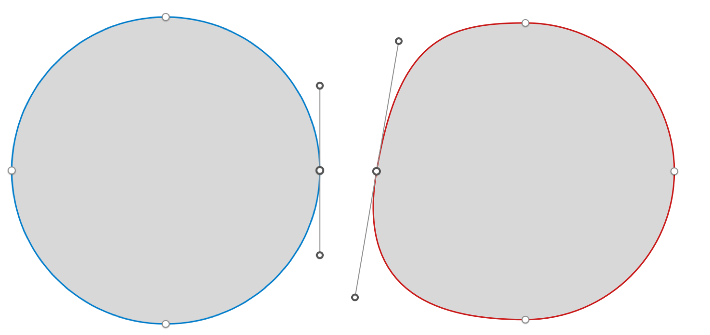
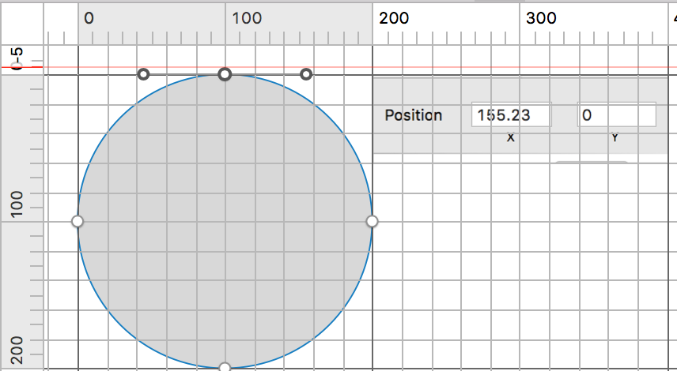

最近一个Pet Project中想要实现一个弹性球的效果,类似足球少年中在球碰撞过程中发生形变,在这个教程的最后，你可以实现一个简单的弹性球
如果把这个球抽象成一个View,那么首先想到的时候这个View需要一个物理系统的支持,纵观iOS系统，提供物理支持的框架大致上有 SpriteKit , UIDynamic, 第三方Lib(如Box2D)
我想到的方式是通过某种形式把这个形变的圆画出来，然后用一套物理系统操作画圆的轨迹
基本上，我把问题分成两大块
- 作图
- 嵌入物理系统
作图
因为平时作图的时候自己时长需要用到钢笔工具，本质上就是在操作一个多阶贝塞尔曲线，而细心的同学会发现在作图工具中有这么一个东西  既然Sketch中可以用贝塞尔曲线作出一个光滑的圆，那么这个用这种方式作图肯定是可以的，如果对贝塞尔曲线不是非常了解的同学，可以看看文末的两篇链接
我们把问题最小化，先把四分之一圆画出来，后续用同样的方式进行迁移即可把整个圆画出 好了，回到我们的思路当中，根据Sketch作图给的提示，这个路径需要两个control points来作画，映射到iOS的实现是这个函数
- (void)addCurveToPoint:(CGPoint)endPoint
controlPoint1:(CGPoint)controlPoint1
controlPoint2:(CGPoint)controlPoint2
那么问题来了， 究竟如何确定下面的A,B两点呢 说实话，其实一开始我也不知道怎么弄，但是我猜想这是一个线性比例关系，就是我只要知道半径为1的圆的A点在那里，那么所有的A点都是可以计算的
所以，我按照Sketch的单位，计算了一番

如上图所示，定点坐标是 (100,0) ,A点坐标是 (155.23,0) ,那么我们很容易就猜想半径比例系数是 1.5523 ,尝试放大缩小这个圆，也能得出同样的系数，且慢，我们不能满足于这个结果，我们要需要证明一下!
本质上我们需要求得c的大小(P1和P3的对称性决定其值一致)
搜索一下 3次贝塞尔曲线的方程
B(t) = (1-t)^3*P_0 +
3*(1-t)^2*t*P_1 +
3*(1-t)*t^2*P_2 +
t^3*P_3, t in [0,1]
以及圆的方程
x = r * cos(a)
y = r * sin(a)
t 是这条曲线上上任意一点，
我们可以根据圆的方程(上上所示)知道 (sqrt(0.5),sqrt(0.5))是其中一个点，那么，根据我们图中给出的点可以得出关于x轴坐标的解:
sqrt(0.5) = 0.5^3 * 0 + 3 * 0.5^2 * 0.5 * c + 3 * 0.5 * 0.5^2 * 1 + 0.5^3 * 1
sqrt(0.5) = 4 / 8 + 3c / 8
c = 4 * (sqrt(2) - 1) / 3
好了，按一下计算器，可以得到这个常量约为 0.552284749831，跟Sketch里面猜想很接近:-)
物理系统
So far so good, 我们根据这个特性，现在能画出正个圆了，
接下来就是模拟球被挤压,拉伸等自然状态了，我在这个项目中选择了UIDynamic这个引擎,下面是实现的理论模型，其实就是用5个隐藏的dynamic item来构成弹性球的"骨架",然后用几条弹簧将他们连接起来，然后根据我们第一步的方式，把几个顶点的dynamic item的动态坐标事实连接起来就ok了
实现出来在模拟器里面会是这样的
具体会使用 CADisplayLink 来保证刷新频率
整体流程大致上是这样的
- (void)startShow
{
self.displayLink = [CADisplayLink displayLinkWithTarget:self selector:@selector(renderShape)];
[self.displayLink addToRunLoop:[NSRunLoop mainRunLoop] forMode:NSDefaultRunLoopMode];
}
- (void)renderShape
{
[self setNeedsDisplay];
}
- (void)drawRect:(CGRect)rect
{
CGContextRef aRef = UIGraphicsGetCurrentContext();
CGContextClearRect(aRef, self.bounds);
//set color code
[self calculatePoints];//动态计算几个control points
UIBezierPath* bezier = [self getCalculateBorderPath]; //根据control point画出相应路径
[bezier stroke];
[bezier closePath];
}
但是，实际操作过程中会遇到不少问题
如动态坐标计算，就是如何把几个control points实际坐标计算出来，我是根据中间的dynamic item和4个顶点的斜率来得出垂直斜率，再根据第一步计算的比例分别得出距离4个顶点的距离，得出坐标，特别需要注意的是垂直的特殊情况,这里我也有一个地方没有处理好，我特意在gif图里面显示出来了
另外一个可以提升的点是碰撞边界，具体我没有实现(其实是实现失败了)
利用iOS9的新特性，重写
- (UIBezierPath *)collisionBoundingPath
- (UIDynamicItemCollisionBoundsType) collisionBoundsType
另外，感兴趣的同学也可以用 SKSpriteNode 来实现弹性球的载体，其实有蛮多效果本质都是结合 CADisplayLink 和UIBezierPath来实现了，深入了解二者和CoreAnimation的Layer对实现一个动效很有帮助，当然，还有很多别的方式，多多思考原理，然后在具体平台中寻找方案
最后，附上代码的 dropbox地址，谢谢各位